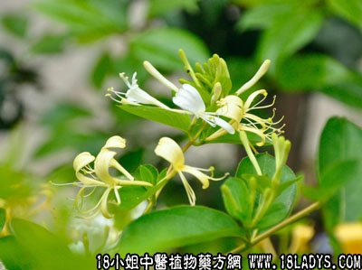

土银花(中药材植物名:山银花)(植物科目:忍冬科)

别名：土忍冬、金银花、左缠藤。
植物名：山银花。
生长环境：本品为多年生藤状灌木，是山野的灌木丛或疏林下略常见的一种野生植物。
分布：我国南部、广东省各地均有分布，普遍生长于灌木丛中，常扳援他树上。
入药部分：花。
采集期：春、夏采花；全年采藤、叶。
采购地点：丛药材公司购入，亦有家种。
性味：性凉、味微甘、气香。
功能：祛湿、清热、解毒。
主治、用量和用法：1、外感发热：干用1至2两，清水煎服；2、痈疮疔毒：干用5钱至1两，清水煎服；3、疳疮、花柳下疳：干用2至2两，煎水，温浸患处，一日浸数次；4、皮肤血热：干用5钱至1两，清水煎服。
附录：（叶）治皮肤疮疖热毒：干叶适量，煎水洗患处。（藤）1、治外感发热、治筋骨湿火痛：干用1至2两，清水煎服。
验方：（治筋骨湿火痛方）银花藤1两、走马箭5钱、川破石5钱、丝瓜络5钱、枸杞头5钱、老桑枝1两、清水五碗，煎成一碗服。
（方解）本方以银花藤、老桑枝、枸杞头、川破石入骨去湿火；走马箭、丝瓜咯舒筋活络、除湿。合为筋骨湿火并治之剂，疗效良好。
（方歌）筋骨湿火痛难当，土银花走马箭方，川破杞头丝瓜络，桑枝用老力能匡。
参考资料：《广州常用草药验方集解》介绍治疗风湿经络痛经验方：银花藤1两、土茵陈1两、丝瓜络5钱、地龙干4钱、嫩桑枝1两、桃仁2钱、清水4碗，煎取1碗温服，凡属寒湿作痛及孕妇勿服。
（方解）本方以银花藤、丝瓜络、嫩桑枝透络舒筋，祛湿清热；土茵陈善解郁湿；地龙、桃仁通络祛瘀。合为标本兼治之剂。对风湿化热，筋络作痛者有效。
（方歌）风湿伤络银花藤，地龙干合土茵陈，嫩桑职助丝瓜络，祛瘀还须用桃仁。